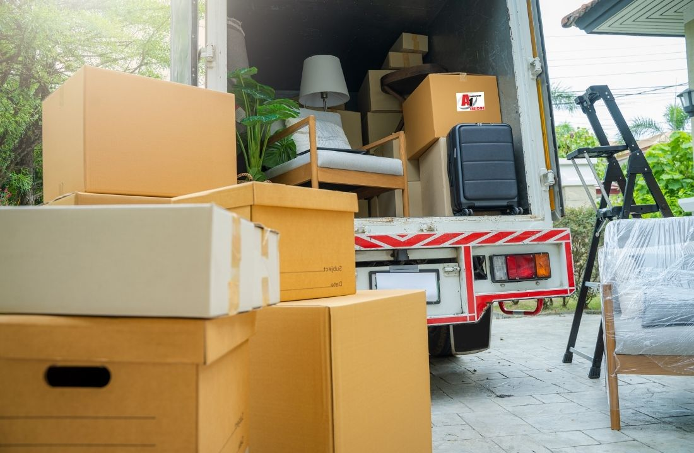
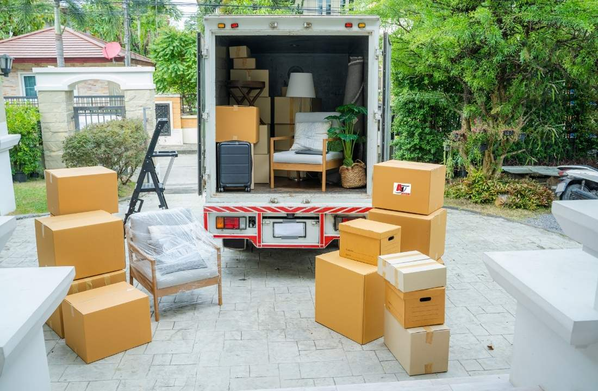

-A1 SELIDBE BEOGRAD-
SELIDBE ORDINACIJA I MEDICINSKE OPREME
PRESELJENJE ZDRAVSTVENIH SISTEMA
Selidba ordinacije zahteva nešto drugačiju organizaciju od uobičajenog preseljenja stana ili poslovnog prostora. Pored nameštaja i kancelarijske opreme, potrebno je premestiti medicinske aparate, instrumente, radne jedinice, dokumentaciju i druge stvari koje moraju stići na novu adresu u odgovarajućem stanju. Zbog toga je važno da se svaki korak unapred isplanira i prilagodi vrsti ordinacije, količini opreme i uslovima na obe lokacije.
Naša A1 agencija za selidbe pruža usluge selidbe ordinacija u Beogradu kao i celoj Srbiji, uz organizaciju transporta i pažljivo rukovanje stvarima koje se koriste u svakodnevnom radu zdravstvenih ustanova. Bilo da planirate preseljenje manje privatne ordinacije, stomatološke ambulante ili većeg medicinskog kabineta, možemo organizovati prevoz nameštaja i opreme prema konkretnim potrebama vašeg prostora.
Ukratko
- Selidbe različitih vrsta ordinacija – Preseljenje stomatoloških, privatnih, specijalističkih i veterinarskih ordinacija, kao i optičarskih radnji.
- Transport medicinske opreme – Prevoz medicinskih aparata, stomatoloških stolica, instrumenata i druge osetljive opreme.
- Organizacija preseljenja – Planiranje utovara, transporta i istovara u skladu sa vrstom i količinom inventara.
- Selidbe širom Srbije – Organizacija preseljenja ordinacija na lokalnim i međugradskim relacijama.
PROFESIONALNE SELIDBE ORDINACIJA U BEOGRADU
Promena lokacije ordinacije često je povezana sa preseljenjem u veći prostor, boljim uslovima za rad ili otvaranjem nove poslovnice. Bez obzira na razlog, važno je da se preseljenje sprovede organizovano, kako bi se izbegli nepotrebni zastoji i komplikacije prilikom ponovnog uspostavljanja rada.
Kod ove vrste selidbe nije dovoljno samo odrediti datum i obezbediti vozilo. Potrebno je napraviti plan utovara, proceniti količinu stvari, odrediti način zaštite osetljivih predmeta i voditi računa o redosledu njihovog premeštanja. Posebnu pažnju zahtevaju aparati, radne jedinice i oprema koja se ne može jednostavno spakovati kao običan nameštaj.
A1 selidbe Beograd organizuje preseljenje ordinacija tako da se posao obavi u dogovorenom terminu i u skladu sa zahtevima klijenta. U zavisnosti od obima preseljenja, moguće je planirati prevoz u jednom ili više navrata, kao i rasporediti utovar i istovar tako da se na novoj lokaciji lakše nastavi sa opremanjem prostora.
Uslugu prilagođavamo različitim vrstama zdravstvenih ustanova, među kojima su:
- Privatne lekarske ordinacije
- Stomatološke ordinacije i dentalne ambulante
- Ginekološke ordinacije
- Dermatološke ordinacije
- Oftalmološke ordinacije
- Pedijatrijske ordinacije
- Specijalističke medicinske ordinacije
- Fizijatrijske ordinacije i rehabilitacioni kabineti
- Veterinarske ordinacije
- Medicinski kabineti i manje laboratorije
Svaka od navedenih ustanova ima specifičan raspored prostorija i opremu koja se koristi u radu. Upravo zato se organizacija selidbe dogovara prema konkretnom prostoru, a ne po unapred određenom obrascu.
SELIDBE STOMATOLOŠKIH I PRIVATNIH ORDINACIJA
Selidbe stomatoloških ordinacija predstavljaju poseban vid preseljenja zbog količine i vrste opreme koja se nalazi u ovim prostorima. Pored standardnog nameštaja, stomatološke ambulante mogu sadržati stomatološke stolice, radne jedinice, kompresore, sterilizatore, rendgenske uređaje, instrumente i različite prateće aparate.
Prilikom preseljenja potrebno je voditi računa o dimenzijama i težini opreme, mogućnosti njenog bezbednog pakovanja i načinu unošenja u transportno vozilo. Neki uređaji zahtevaju prethodnu pripremu, odvajanje pojedinih delova ili postupanje prema uputstvima proizvođača. Zbog toga je preporučljivo da vlasnik ordinacije, odnosno ovlašćeni serviser, pripremi i odvoji opremu koja zahteva stručno isključivanje ili demontažu.
Firma A1 selidbe može organizovati transport stomatološkog nameštaja, radnih elemenata i druge opreme koja je pripremljena za prevoz. Posebno je važno da se pre utovara napravi pregled stvari kako bi se odredio potreban prostor u vozilu i način njihovog raspoređivanja.
Kod privatnih lekarskih i specijalističkih ordinacija situacija je nešto drugačija. U njima se, pored medicinskih aparata, najčešće nalaze radni stolovi, stolice, ormari, police, čekaonice i druga oprema za prijem i pregled pacijenata. Prilikom preseljenja potrebno je obuhvatiti sve prostorije, uključujući prijemni deo, ordinaciju, prostoriju za intervencije i pomoćne prostorije.
Bez obzira na to da li se radi o jednoj ordinaciji ili većem broju kabineta, cilj je da se sve stvari prevezu na novu lokaciju bez nepotrebnog zadržavanja i dodatnog komplikovanja procesa.
BEZBEDAN TRANSPORT MEDICINSKE OPREME
Medicinska oprema često predstavlja najvredniji i najosetljiviji deo inventara jedne ordinacije. Za razliku od standardnog nameštaja, pojedini uređaji imaju osetljive komponente, precizne mehanizme ili delove koji mogu biti podložni oštećenjima prilikom nepravilnog rukovanja.
Zbog toga je prevoz medicinske opreme potrebno planirati pažljivo. Prvo se utvrđuje šta se sve transportuje, koje predmete je moguće spakovati u standardnu ambalažu, a za koje je potrebno obezbediti dodatnu zaštitu. Važno je i da se prilikom utovara ne stvara pritisak na osetljive delove uređaja i da se predmeti pravilno rasporede u vozilu.
U zavisnosti od vrste ordinacije, selidba medicinske opreme može obuhvatiti:
- Medicinske aparate i dijagnostičke uređaje
- Stomatološke stolice i radne jedinice
- Sterilizatore i prateću opremu
- Medicinske i stomatološke instrumente
- Radne stolove, ormariće i police
- Nameštaj iz čekaonica i prijemnih prostorija
- Računarsku i kancelarijsku opremu
- Arhivsku dokumentaciju i kartoteke

Zaštita opreme podrazumeva korišćenje odgovarajućih materijala za pakovanje stvari i pažljivo rukovanje tokom utovara, transporta i istovara. U slučaju uređaja koji zahtevaju specifičan način pripreme, njihovo isključivanje, odvajanje instalacija i ponovno povezivanje treba da obavi ovlašćeno ili stručno lice.
Važno je napomenuti da transport medicinskih uređaja ne zamenjuje stručnu montažu, kalibraciju ili proveru ispravnosti. Kada je reč o aparatima koji zahtevaju takve postupke, njihovo ponovno stavljanje u funkciju treba prepustiti odgovarajućem servisu.
KAKO ORGANIZUJEMO PRESELJENJE ORDINACIJE?
Dobro organizovana selidba ordinacije počinje pre samog dana transporta. Kada se unapred utvrde obim posla, vrsta opreme i uslovi na novoj adresi, mnogo je lakše odrediti potrebnu ekipu, vozila kao što su kamion i kombi za selidbe i vreme za realizaciju.
Proces preseljenja ordinacije najčešće obuhvata nekoliko koraka:
Dogovor i procena obima selidbe
Prvi korak je razgovor sa klijentom o vrsti ordinacije, količini stvari i lokaciji na koju se oprema premešta, da li je u pitanju lokalno preseljenje ili međugradska selidba. Potrebno je utvrditi da li se transportuje samo nameštaj ili i veći broj medicinskih uređaja, kao i da li postoje predmeti posebnih dimenzija ili težine.
Planiranje termina i transporta
Nakon procene dogovaraju se datum i vreme selidbe. Termin se može uskladiti sa radnim obavezama ordinacije, tako da se preseljenje obavi tokom vikenda, neradnih dana ili u drugom periodu koji odgovara klijentu.
Priprema i pakovanje stvari
Pre transporta potrebno je pripremiti nameštaj, dokumentaciju i opremu. Sitniji predmeti i instrumenti pakuju se u odgovarajuće kutije, dok se osetljivi uređaji dodatno štite. Medicinska dokumentacija i poverljivi podaci treba da budu posebno organizovani i pod kontrolom ovlašćenog osoblja ordinacije.
Utovar i prevoz
Kada je sve spremno, pristupa se utovaru. Predmeti se raspoređuju tako da tokom vožnje ne dolazi do njihovog pomeranja, udaranja ili opterećivanja osetljivih delova. Nakon toga sledi prevoz i selidba do nove adrese.
Istovar i raspored opreme
Po dolasku na odredište, stvari se pažljivo istovaruju i unose u prostorije prema dogovoru. Nameštaj i oprema mogu se rasporediti po prostorijama kako bi se olakšao nastavak opremanja ordinacije. Ukoliko je dogovoreno naša ekipa vrši montažu nameštaja.
Ovakav pristup omogućava bolju kontrolu nad celim procesom i smanjuje mogućnost da se važni detalji previde tokom preseljenja.
ŠTA OBUHVATA USLUGA SELIDBE ORDINACIJE?
Obim usluge zavisi od veličine ordinacije, vrste inventara i dogovora sa klijentom. Nekada je potrebno da se izvrši samo prevoz nameštaja i nekoliko uređaja, dok druge selidbe podrazumevaju kompletnu opremu iz više prostorija.
Usluga preseljenja ordinacije se može organizovati tako da obuhvati:
- Transport ordinacijskog i kancelarijskog nameštaja
- Prevoz medicinskih i stomatoloških aparata pripremljenih za transport
- Prenos kutija sa dokumentacijom i drugim materijalom
- Utovar i istovar stvari
- Zaštitu nameštaja i opreme tokom transporta
- Prenos stvari iz pomoćnih prostorija, čekaonica i prijemnih delova
- Organizaciju prevoza većeg broja predmeta u jednoj ili više tura
Ukoliko ordinacija poseduje teške uređaje, specijalizovane aparate ili opremu koja zahteva poseban način manipulacije, potrebno je to naglasiti prilikom dogovora. Na taj način moguće je unapred utvrditi da li su potrebni dodatni uslovi, odgovarajuća oprema ili angažovanje stručnog osoblja za pripremu i demontažu.

KOLIKO KOŠTA SELIDBA ORDINACIJE?
Cena selidbe ordinacije zavisi od nekoliko faktora, pa nije moguće odrediti jedinstven iznos koji bi odgovarao svim vrstama preseljenja. Manja privatna ordinacija sa osnovnim nameštajem i nekoliko uređaja nema iste zahteve kao stomatološka ambulanta sa većim brojem aparata ili medicinski kabinet sa obimnijim inventarom.
Prilikom formiranja cene najčešće se uzimaju u obzir:
- Količina i dimenzije stvari koje se prevoze
- Vrsta i težina medicinske opreme
- Udaljenost između stare i nove lokacije
- Spratnost objekta i postojanje lifta
- Uslovi za prilaz transportnom vozilu
- Potreban broj radnika i vreme trajanja selidbe
- Dodatni zahtevi u vezi sa pakovanjem i zaštitom opreme
Za precizniju procenu cene selidbe potrebno je navesti šta se sve seli, gde se ordinacija trenutno nalazi i na koju adresu se preseljava. Ukoliko postoje uređaji većih dimenzija ili posebne težine, korisno je unapred dostaviti njihove osnovne podatke.
A1 selidbe pristupa svakoj selidbi u skladu sa njenim obimom i specifičnostima. Na osnovu informacija o prostoru i inventaru moguće je dogovoriti odgovarajuću organizaciju transporta i procenu troškova.
ZAŠTO ANGAŽOVATI A1 SELIDBE ZA PRESELJENJE ORDINACIJE?
Preseljenje zdravstvene ustanove zahteva dobru pripremu, pouzdan transport i pažnju prema stvarima koje se koriste u svakodnevnom radu. Nije svejedno kako će biti premešteni medicinski aparati, stomatološke stolice, radni elementi ili nameštaj iz čekaonice.
Kada organizaciju transporta prepustite ekipi koja se bavi selidbama, možete se više posvetiti pripremi nove ordinacije, obaveštavanju pacijenata i drugim poslovima koji prate promenu lokacije.
Naša agencija za selidbe organizuje preseljenje u skladu sa količinom inventara, vrstom opreme i dogovorenim terminom. Bez obzira na to da li se seli manja privatna ordinacija ili kompletan medicinski kabinet, važno nam je da se unapred utvrde potrebe klijenta i da se transport obavi pažljivo i organizovano.
Planirate preseljenje ordinacije u Beogradu? Kontaktirajte A1 selidbe, opišite nam šta je potrebno prevesti i navedite lokacije između kojih se obavlja preseljenje. Na osnovu tih informacija možemo razgovarati o organizaciji posla, potrebnom vozilu i okvirnoj ceni usluge.